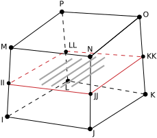
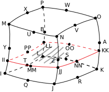
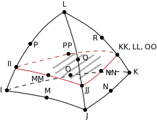
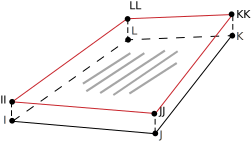
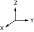
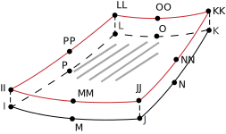

3-D Smeared Reinforcing
REINF265 Element Description
Use REINF265 with standard 3-D solid and shell elements (referred to here as the base elements) to provide extra reinforcing to those elements.
The element uses a smeared approach and is suitable for modeling evenly spaced reinforcing fibers that appear in layered form. Each reinforcing layer contains a cluster of fibers with unique orientation, material, and cross-section area, and is simplified as a homogeneous membrane having unidirectional stiffness. You can specify multiple layers of reinforcing in one REINF265 element. The nodal locations, degrees of freedom, and connectivity of the REINF265 element are identical to those of the base element.
For discrete reinforcing modeling options, see the documentation for the REINF264 element.
REINF265 has plasticity, stress stiffening, creep, large deflection, and large-strain capabilities.
For more information, see Reinforcing in the Mechanical APDL Structural Analysis Guide.
Figure 265.1: REINF265 Geometry
|

|

|
|

|

|
|
 
| |
Figure 265.2: REINF265 Coordinate System
X = Layer x-axis if the local coordinate system reference number (SECDATA,,, KCN) for the layer is specifiedX0 = Layer x-axis if the local coordinate system reference number is not specified
REINF265 Input Data
The geometry and nodal locations for this element are shown in Figure 265.1: REINF265 Geometry. The REINF265 element and its base element share the same nodes and element connectivity.
You can easily create REINF265 elements from the selected base elements via the EREINF command. Section commands (SECTYPE and SECDATA) define the material ID, cross-section area, spacing, location, and orientation of reinforcing fibers.
The equivalent thickness h of the
smeared reinforcing layer is given by
h = A / S
where A is the cross-section area
of a single fiber, and S is the distance
between two adjacent fibers.
The coordinate systems for one reinforcing layer are shown in Figure 265.2: REINF265 Coordinate System. Each reinforcing layer is indicated by its intersection points (II, JJ, KK, LL for linear base elements, and II, JJ, KK, LL, MM, NN, OO, PP for quadratic base elements) with the base elements. Fibers in this layer are always parallel to the first coordinate axis x. The x axis is default to the first parametric direction S1 at the center of the layer. The default axis is defined as
where
| {x}II, {x}JJ, {x}KK, {x}LL = global nodal coordinates |
You can reorient the default layer coordinate system by projecting a local coordinate system (LOCAL) to the layer plane. One local coordinate system is allowed for each layer. The local coordinate system reference number is given via the SECDATA command.
You can further rotate the layer coordinate system by angle θ (in degrees) for each layer. The value of θ is also provided for each layer via SECDATA. For more information about visualizing fiber orientations, see the /PSYMB command documentation.
REINF265 allows tension-only or compression-only reinforcing fibers. You can specify the desired fiber behavior (SECCONTROL).
The element can account for redundant base element material where the
reinforcing fibers are located
(SECCONTROL,,REMBASE).
The REINF265 element does not accept element loading. Apply element loading only to the base element. The temperature of the REINF265 element is identical to the temperature of the base element.
You can import an initial stress state for this element (INISTATE). For more information, see Initial State in the Mechanical APDL Advanced Analysis Guide.
A summary of the element input follows.
REINF265 Input Summary
- Nodes
Same as those of the base element, as shown:
Base Element REINF265 Nodes 3-D 8-Node Solid or Solid Shell I,J,K,L,M,N,O,P 3-D 20-Node Solid I,J,K,L,M,N,O,P,Q,R,S,T,U,V,W,X,Y,Z,A,B 3-D 10-Node Tetrahedral Solid I,J,K,L,M,N,O,P,Q,R 3-D 4-Node Shell I,J,K,L 3-D 8-Node Shell I,J,K,L,M,N,O,P - Degrees of Freedom
Same as those of the base element, as shown:
Base Element REINF265 DOFs 3-D 8-Node Solid or Solid Shell UX, UY, UZ 3-D 20-Node Solid UX, UY, UZ 3-D 10-Node Tetrahedral Solid UX, UY, UZ 3-D 4-Node Shell UX, UY, UZ, ROTX, ROTY, ROTZ 3-D 8-Node Shell UX, UY, UZ, ROTX, ROTY, ROTZ - Real Constants
None - Material Properties
TB command: See Element Support for Material Models for this element. MP command: EX, (PRXY or NUXY), ALPX (or CTEX or THSX), DENS, GXY, ALPD, BETD, DMPR - Surface Loads
None - Body Loads
- Temperatures --
Same as those of the base element
- Special Features
Birth and death Initial state Large deflection Large strain Stress stiffening
REINF265 Output Data
The solution output associated with the element is in two forms:
Nodal displacements included in the overall nodal solution
Additional element output as shown in Table 265.1: REINF265 Element Output Definitions.
The following figure illustrates the axial stress component:
Figure 265.3: REINF265 Stress Output
X = Layer x-axis if the local coordinate system reference number (SECDATA,,,, KCN) for the layer is specifiedX0 = Layer x-axis if the local coordinate system reference number is not specified
Unlike layered solid or shell elements (such as SHELL181), REINF265 always outputs the element solution for all reinforcing layers. You can select solution items for a specific reinforcing layer (LAYER) for listing and visualization by using full graphics (/GRAPHICS,FULL). Visualization via PowerGraphics (/GRAPHICS,POWER) is not affected by the LAYER command; all reinforcing layers are displayed simultaneously. See the Basic Analysis Guide for ways to review results.
To inspect REINF265 element results, select only REINF265 element results or adjust translucency level of the base elements before executing any plotting command. REINF265 display options are also available directly via the GUI ().
The Element Output Definitions table uses the following notation:
A colon (:) in the Name column indicates that the item can be accessed by the Component Name method (ETABLE, ESOL). The O column indicates the availability of the items in the file Jobname.OUT. The R column indicates the availability of the items in the results file.
In either the O or R columns, “Y” indicates that the item is always available, a number refers to a table footnote that describes when the item is conditionally available, and “-” indicates that the item is not available.
Table 265.1: REINF265 Element Output Definitions
| Name | Definition | O | R |
|---|---|---|---|
| EL | Element number and name | - | Y |
| NODES | Nodes (as shown in "REINF265 Input Summary") | - | Y |
| MAT | Material number | - | Y |
| AREA | Averaged cross-section area of reinforcing fibers | - | Y |
| SPACING | Averaged distance between two adjacent fibers | - | Y |
| VOLU: | Volume | - | Y |
| XC, YC, ZC | Center location | - | 3 |
| TEMP |
T1, T2, T3, T4 for reinforcing layer 1; T5, T6, T7, T8 for reinforcing layer 2; ending with temperatures for the last reinforcing layer NL (4*NL maximum) | - | Y |
| S:X | Axial stresses | 2 | Y |
| EPEL:X | Axial elastic strains | 2 | Y |
| EPTH:X | Axial thermal strains | 2 | Y |
| EPPL:X | Axial plastic strains | 2 | 1 |
| EPCR:X | Axial creep strains | 2 | 1 |
| EPTO:X | Total axial mechanical strains (EPEL + EPPL + EPCR) | Y | - |
| NL:EPEQ | Accumulated equivalent plastic strain | - | 1 |
| NL:CREQ | Accumulated equivalent creep strain | - | 1 |
| NL:SRAT | Plastic yielding (1 = actively yielding, 0 = not yielding) | - | 1 |
| NL:PLWK | Plastic work/volume | - | 1 |
| N11 | Averaged axial force | - | Y |
| LOCI:X, Y, Z | Integration point locations | - | 4 |
Table 265.2: REINF265 Item and Sequence Numbers lists output available through ETABLE using the Sequence Number method. See Creating an Element Table and The Item and Sequence Number Table in this document for more information. The following notation is used in Table 265.2: REINF265 Item and Sequence Numbers:
- Name
output quantity as defined in Table 265.1: REINF265 Element Output Definitions
- Item
predetermined Item label for ETABLE
- E
sequence number for single-valued or constant element data
The i value (where i = 1, 2, 3, ..., NL) represents the reinforcing
layer number of the element. NL is the
maximum reinforcing layer number (1

NL
 250).
250).
REINF265 Assumptions and Restrictions
Zero-volume elements are invalid.
This element can be used only with base element types SHELL181, SHELL281, SOLID185, SOLID186, SOLID187, and SOLSH190.
A valid base element must be present for each REINF265 element.
The reinforcing element is firmly attached to its base element. No relative movement between the reinforcing element and the base is allowed.
Through-thickness reinforcing is not permitted in shells and layered solid elements.
Stress stiffening is always included in geometrically nonlinear analyses (NLGEOM,ON). You can activate prestress effects via the PSTRES command.
To simulate tension-/compression-only reinforcing fibers, a nonlinear iterative solution approach is necessary.